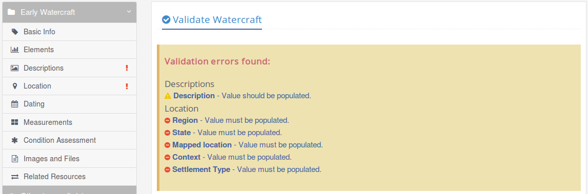

Editing data¶
Only authenticated users will be allowed to edit data. When a user has been authenticated, additional features for editing and publishing resources are enabled in the application.
Watercraft Manager¶
Watercraft Manager is the starting point for all editing. The top menu (Watercraft Manager) offers creation of all types of resources to which the individual user has been assigned permissions. Each type of the resource has its own data groups; the following options are common for all resource types:
Basic editing rules¶
All resources are edited within Watercraft manager the same way. Data are divided in content groups and each group has one or more data fields for editing. When more than one record of some data (multi-line edit) is possible, the data must be added to the list below the selected data group using the ‘Add’ button.
When there is only one possible entry for the given data (single-line edit), data entry is accepted automatically.
Either way, to save data to the database, the entered data must be confirmed using the ‘Save edits’ button in the upper right corner. To discard changes, use ‘Discard edits’ button.
Basic validation rules for current data group are applied before saving data. Resource-level data validation is applied through Data validation before proceeding to the next status.
Resource types¶
There are six types of resources:
| Resource Type | Description |
|---|---|
| Early Watercraft | The main type, comprising all detailed data for Early Watercraft. |
| Early Watercraft Group | A resource for grouping similar items of Early Watercraft. |
| Activity | Activities recorded in relation to Early Watercraft. |
| Early Watercraft Event | Events recorded in relation to Early Watercraft. |
| Person/Organization | Persons and/or organizations, related to Early Watercraft. |
| Information Resource | Documents, images, 3D models, files, etc. related to Early Watercraft. |
Note
Currently, only PLY, STL and OBJ file formats are supported in Online view of 3D models. The PLY format must first be converted to a multi-resolution format (NXS), meaning that it can take from a few seconds to a few minutes (depending on its size) before a model can be shown in the report.
To create a new resource, the top menu (Watercraft Manager) offers only resources to which user has editing permissions. For the existing resources, the ‘Edit’ button is shown only if the user has appropriate permissions.
Authorization¶
To edit resource data, the user must be assigned to at least one authorization group.
- Two group types exist for each resource type:
- EDIT_(Resource_Type): edit permissions for (Resource Type)
- create new resource (in ‘Draft’ status)
- edit own resources in ‘Draft’ status
- delete own resources in ‘Draft’ status
- validate and prepare data for Approval
- return a resource from status ‘Approval rejected’ to ‘Draft’
- PUBLISH_(Resource_Type): publish permissions for (Resource Type)
- all edit permissions
- publish resource
- reject resource, pending for approval
List of all authorization groups¶
| Authorization group | Permissions |
|---|---|
| EDIT_HERITAGE_RESOURCE.E18 | Edit permissions for Early Watercraft |
| EDIT_HERITAGE_RESOURCE_GROUP.E27 | Edit permissions for Early Watercraft Group |
| EDIT_ACTIVITY.E7 | Edit permissions for Activity |
| EDIT_HISTORICAL_EVENT.E5 | Edit permissions for Early Watercraft Event |
| EDIT_ACTOR.E39 | Edit permissions for Person/Organization |
| EDIT_INFORMATION_RESOURCE.E73 | Edit permissions for Information Resource |
| PUBLISH_HERITAGE_RESOURCE.E18 | Publish permissions for Early Watercraft |
| PUBLISH_HERITAGE_RESOURCE_GROUP.E27 | Publish permissions for Early Watercraft Group |
| PUBLISH_ACTIVITY.E7 | Publish permissions for Activity |
| PUBLISH_HISTORICAL_EVENT.E5 | Publish permissions for Early Watercraft Event |
| PUBLISH_ACTOR.E39 | Publish permissions for Person/Organization |
| PUBLISH_INFORMATION_RESOURCE.E73 | Publish permissions for Information Resource |
| RDM | View and edit Reference Data Manager |
There are two additional authorization levels for administrative purposes in addition to the above-listed authorization groups.
- These are:
- Staff status: users can log in to admin site and manage users
- Superuser status: users have all permissions without explicitly assigning them
Ownership groups¶
Every authenticated user, which edits resources, must be member of one (and only one) ownership group. The user is only allowed to edit and process data from the ownership group to which the user is allocated (all other resources are locked for editing).
Any name with ‘OWNERSHIP’ prefix can serve as the name of the ownership group. Every newly created resource gets the name of the ownership group of the author (i.e. of the user who created it). From this moment on, only members of this group are authorized to edit this resource.
Current ownership groups¶
| Ownership group | Description
|
|---|---|
| OWNERSHIP_SLOVENIA_IPCHS | Institute for the Protection of Cultural Heritage of
Slovenia
|
Note
Currently, Early Watercraft has only one ownership group (for this project) since there is no need for more. However, the application can support any number of ownership groups.
Publishing workflow¶
Early Watercraft resources are visible to public (unauthenticated) users only after they have been published. To publish a resource, a user has to fill in all required data and send the resource to the user with publishing permissions, who in turn approves the resource to be published. The publisher (i.e. the user with publishing permissions) can then either approve (publish) the resource or reject the approval. All possible process options are shown in a workflow diagram below.
Workflow diagram¶
Note
Mails are only sent to others (no mail is sent if the current user is the intended recipient).
Resource statuses¶
Resource status is shown only to authenticated users (all other users see only the published resources). The status is shown in parenthesis after the resource type (in resource header, resource list, report, etc).
| Status | Description
|
|---|---|
| Draft | Initial status:
- only status where ‘Editor’ can modify data
- only status where resource can be deleted
|
| Pending approval | When ‘Editor’ (the user who created the resource) fills in all
required data, a ‘Publisher’ (i.e. the user with publisher
permissions) can:
- modify existing data
- publish a resource
- reject approval (explanation required)
|
| Published | The resource is visible to public (unauthenticated) users.
|
| Approval rejected | An ‘Editor’ can return resource to a ‘Draft’ status and repeat the
publishing process.
|
Data validation¶
Resource can be processed to the next status only when all conditions are met. Each resource has its own validation rules for each status. To check if all condition are met, the user needs to select ‘Validate resource’ in the sidebar menu.
When the application finds missing data, unique records, etc. the user has to amend all errors to continue processing the resource to the next status.
There are two types of data validation errors:
| Icon | Type | Description |
|---|---|---|
| Error | The user has to correct an error to continue to the next status. | |
| Warning | The user can continue to the next status. |
For each validation error there is a link to the data group where the user is able to correct an error. Each data group with errors is also marked using an exclamation mark in sidebar menu.

When all conditions are met, a button for the next status is enabled.
Map icons¶
While a document is in processing (not published yet), its icon has an additional marker in upper left corner, indicating its current status.
| Status marker | Status |
|---|---|
| Draft | |
| Pending approval | |
| Approval rejected |
{kind=link}
{kind=link}
{kind=link}